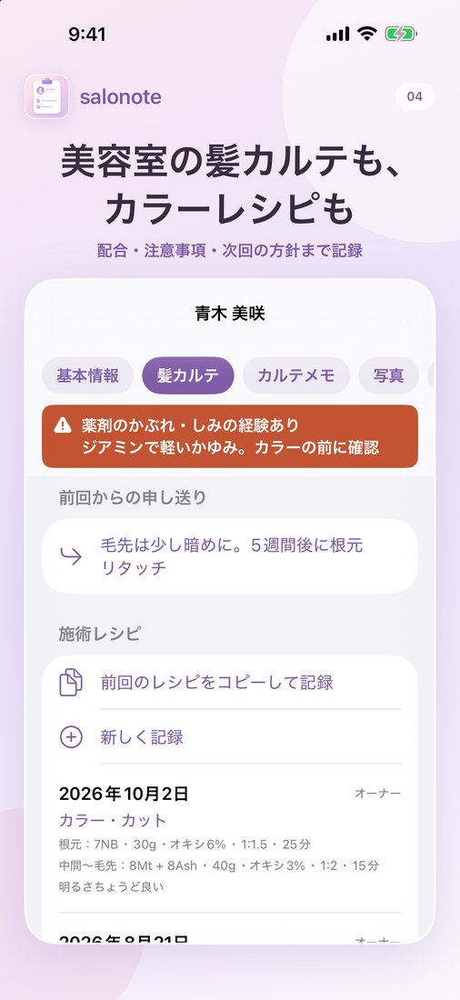

「前回と同じ色で」に応える、美容室の顧客カルテアプリ
salonote（サロノート）は、個人・小規模の美容室向けのiPhone・iPadアプリです。カラーの配合や放置時間、アレルギーなどの注意事項、次回の方針までを1人ずつ記録し、予約と会計までひとつにまとめられます。
美容室向けの機能（サロンの種類の選択、髪カルテ、美容室の料金カテゴリー）は、次のアップデート（バージョン1.2.0）で追加されます。現在App Storeの審査中で、公開されるまでは今のアプリでは使えません。
salonoteでできること
- カラー・パーマ・縮毛矯正のレシピを、前回の記録をコピーして残せる
- アレルギーや注意事項を、カルテの一番上に表示できる
- 予約、施術中の料金計算、会計履歴までひとつのアプリで管理できる
- 無料で始められ、プロ版は月額0円の買い切り（15,000円）
カラーレシピを、次の来店に活かす
施術ごとに、塗布場所（根元・中間〜毛先など）別に薬剤名と色番、量、オキシ、比率、放置時間を記録できます。パーマはロッド、縮毛矯正はアイロン温度も残せます。
前回のレシピをコピーして記録できるので、毎回の入力は変えた部分だけで済みます。仕上がりの反応と「次回の方針」を書いておくと、次に開いたときにカルテの上に申し送りとして表示されます。

注意事項を、担当者以外にも確実に
薬剤でかぶれた経験、パッチテストの実施日と結果、避けたい施術を記録できます。内容を入力すると、カルテのどの画面でも一番上に注意書きが表示されるので、いつもと違うスタイリストが担当する日も見落としを防げます。
ヘアカラーのアレルギーは、これまで問題がなかった方にも起こることがあります。記録は確認を助けるためのものです。施術の前には、毎回お客様に確認してください。
髪カルテに残せること
| 分類 | 項目 |
|---|---|
| 注意事項 | 薬剤のかぶれ・しみの経験、最終確認日、パッチテスト、避けたい施術 |
| 髪・頭皮 | 太さ、毛量、くせ、ダメージと場所、頭皮の状態、白髪の場所 |
| 好み・接客 | 希望、してほしくないこと、施術中の会話、普段のスタイリング・ホームケア、他店・セルフの施術歴 |
| 施術の記録 | 施術日、担当、施術の種類、レシピ、施術前の状態、技術メモ、仕上がりの反応、次回の方針、次回来店の目安 |
施術写真、スタッフ専用メモ、来店履歴、会計履歴、予約も同じカルテにまとまります。
料金の見える化は、美容室のお会計にも
カット、カラー、トリートメント、指名料などを追加するたびに、合計金額がその場で更新されます。お客様にそのまま見せられる明細画面があるので、施術中の追加メニューも金額を確認しながら提案できます。料金表のカテゴリーは美容室向けのものが最初から用意されていて、名前の変更や非表示、並べ替えでお店のメニューに合わせられます。
向いているサロン、向いていないサロン
向いているサロン
- 個人経営やスタッフ数名までの美容室
- 紙のカルテをスマホやiPadに移したいサロン
- 月額料金をかけずに、カルテと会計をまとめたいサロン
向いていないサロン
- お客様からのWeb予約を受け付けたいサロン（Web予約や予約サイトとの連携はありません）
- アプリから決済やレシート印刷をしたいサロン（Square・Airレジなどとの併用になります）
- AndroidやPCで使いたいサロン（iPhone・iPad専用です）
ネイルも美容も行うサロンへ
1つのお店でネイルと美容の両方を行う場合は、プロ版で「ネイル＋美容室」を選べます。顧客はひとつにまとまり、両方の料金カテゴリーと髪カルテを使えます。お客様ごとの利用状況（ネイルのみ・美容室のみ・両方）で絞り込むこともできます。無料版では、ネイルサロンか美容室のどちらか一方を選びます。
よくある質問
料金はいくらですか？
無料版は顧客5名まで利用できます。プロ版は15,000円の買い切りで、月額料金はありません。顧客数の制限がなくなり、iPhone・iPad合計5台までiCloudで同期できます。
あとから「美容室」に変更できますか？
はい。バージョン1.2.0へのアップデート後は、設定からいつでも変更できます。入力済みのデータは消えません。
お客様のアレルギーなどの情報はどこに保存されますか？
端末内と、ご自身のApple AccountのiCloudプライベートデータベースにだけ保存されます。開発者のサーバーには送信されません。